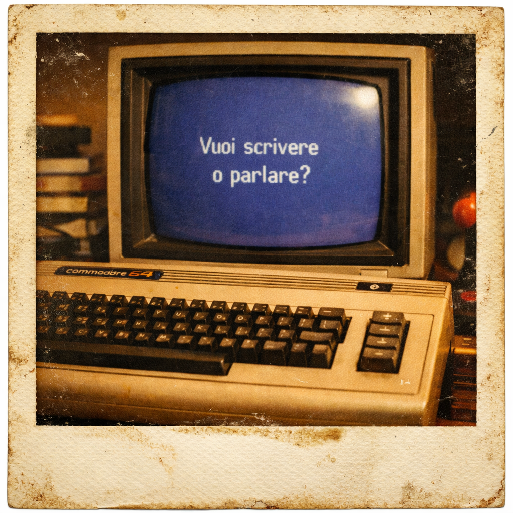

Libro di Favole a 8-bit
La Favoladel C64
Sei favole, un bambino e una macchina beige. Un viaggio nei colori, nei numeri, nei fantasmi e nella musica del Commodore 64 — dove la prima parola giusta apre mondi interi.

Sei favole, un bambino e una macchina beige. Un viaggio nei colori, nei numeri, nei fantasmi e nella musica del Commodore 64 — dove la prima parola giusta apre mondi interi.
Eddyson ha dieci anni, è il 1983, e nella sua stanza c'è un oggetto che sembra venire dal futuro: un Commodore 64 nuovo di zecca. Quella sera, sotto la luce calda della lampada, scrive la sua prima parola giusta: PRINT "CIAO".
Il Nonno — quella macchina beige con 64 kilobyte di RAM e tre voci nel cuore — risponde. E così inizia un viaggio attraverso i colori, i numeri, i fantasmi e la musica. Cinque capitoli, cinque magie, cinque favole che insegnano a pensare in codice.
La Favola del C64 è un libro per chi ha avuto un Commodore 64 e non riesce a dimenticarlo, e per chi non l'ha mai visto ma merita di sapere cosa significa tenere il respiro davanti a uno schermo blu.
PRINT, INPUT, IF...THEN. Il primo dialogo tra un bambino e una macchina. La scoperta che bastano le parole giuste per aprire mondi.
RND, INT, FOR...NEXT. I numeri come magia, il caso come gioco. Il computer che ragiona e il bambino che impara la logica.
POKE 53281. Sedici colori, sedici numeri magici. Lo schermo che diventa tela e il bambino che diventa pittore di pixel.
Sprite, SIN(), movimento. Otto creature di pixel che danzano sullo schermo. Il computer che diventa teatro interattivo.
SID, ADSR, tre voci. Il chip che canta. Il computer che non parla, non ragiona, non disegna: canta. E il bambino è il direttore d'orchestra.
Il Nonno in cantina, trent'anni dopo. Il figlio che chiede: "Papà, con cosa giocavi?" La magia che non sta nella potenza, ma nell'incontro.
Bastava scrivere la parola giusta e il mondo si apriva.

Nato nel 1982 negli stabilimenti della Commodore Business Machines, il Nonno è un piccolo computer beige — poco più grande di una tastiera — che conteneva dentro di sé una rivoluzione.
Otto kilobyte di ROM. Sessantaquattro kilobyte di RAM. Un processore MOS 6510 che batteva a poco meno di un megahertz. E soprattutto: un chip audio chiamato SID, tre voci capaci di suonare musica vera.
Fu il computer più venduto della storia: oltre diciassette milioni di esemplari. Non era soltanto una macchina: era una porta. E per Eddyson, diventò un nonno.
Disponibile ora in formato ebook e cartaceo
⬇ ACQUISTALO SU AMAZON